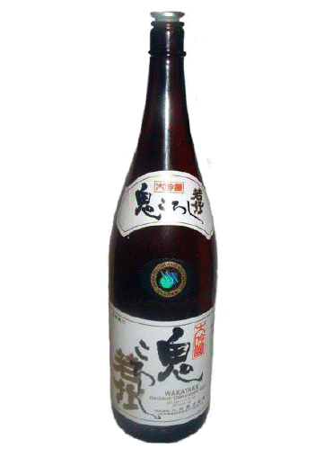
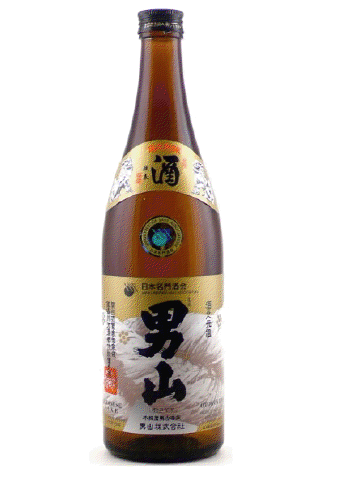
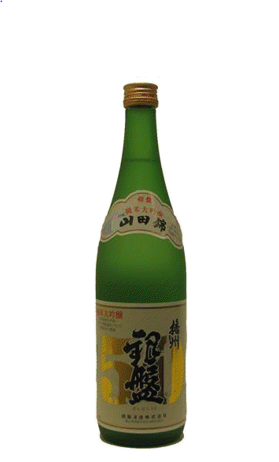
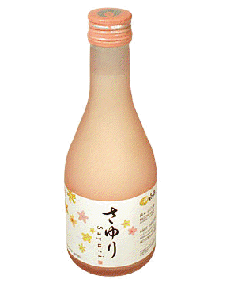
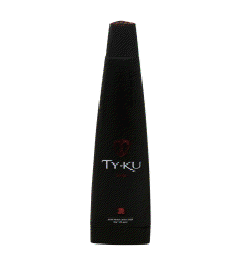
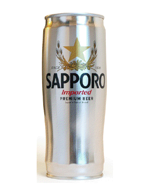
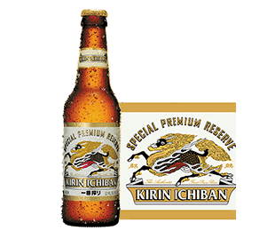

Tsukushinbo Traditional Japanese Cuisine
Home
Menu
List Menu
Sushi
Sashimi/Nigiri
Sake
Location
Order Online
Sake Menu
(Hover over entrees to see descriptions)
Onikoroshi (AKA Demon Slayer)

FLAVOR PROFILE: SMV +5, Acidity 1.2, Gentle & Clean
Otokyoma

FLAVOR PROFILE: SMV +2, Acidity 1.4, Firm & Clean
<
Suishin

FLAVOR PROFILE: SMV +3, Acidity 1.1, Gentle & Smooth
Junimai
FLAVOR PROFILE: SMV +5, Acidity 1.0, Dry
Nigori

FLAVOR PROFILE: SMV +1, Acidity 1.2, Sweet & Smooth
Tyku

FLAVOR PROFILE: SMV +5, Acidity 1.5, Sweet & Clean
sapporo beer

Light
Kirin Ichiban beer

Dark